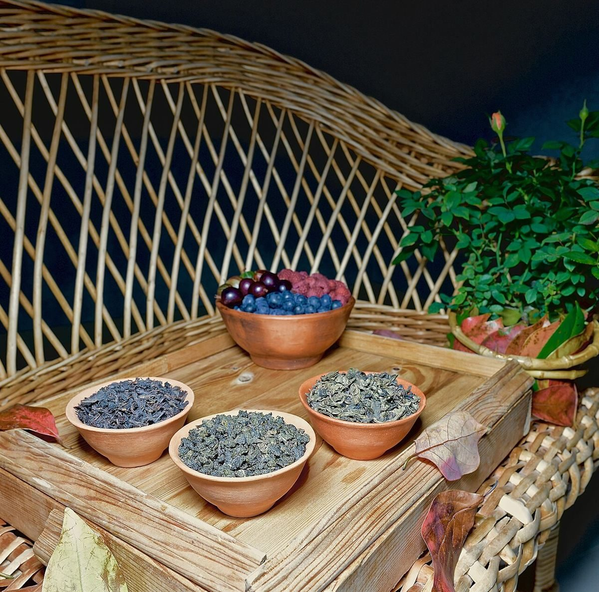

店のこと
お店について確認できているのは、所在地とInstagramのアカウントだけです。
このページの「貼ってみた想像」は、制作側が想像して書いたものです。お店の実際の様子・考え・メニューとは関係ありません。
確認できていること
- 店名は「ショクトキ」、業種はカフェ
- 所在地は福島県須賀川市本町1-1
- 電話番号はなし。連絡はInstagramから
- 営業時間・定休日・メニュー・価格・ご予約・駐車場は準備中

貼ってみた想像
由来は分かりません。制作側は、カタカナ四文字の名前を、四色のテープに一文字ずつ書き分けて貼る場面に見立てました。足りない情報はまだ空白のままなので、お店から教えていただけたら、テープを貼り替えるように差し替えます(実際のお店の姿ではありません)。

